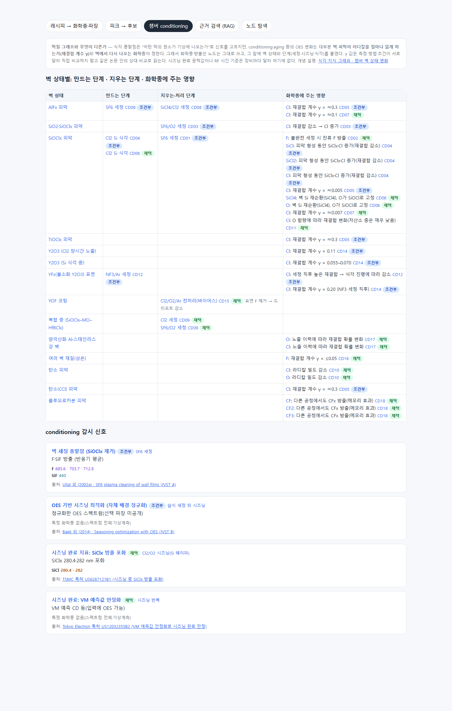

#59
챔버 conditioning·aging OES에 지식 그래프 적용 — 벽 상태 축 추가
지시 (원문)
Etch Chamber Conditioning을 위한 Aging 과정에서 발생하는 OES에 대해서도 위 그래프 적용이 가능한가? 불가하다면 다른 지식 조사 후 추가
분석 (Claude의 정리)
- 지금 그래프는 "막질 → 조합 → 화학종 → 방출선"이다. conditioning·aging 중 OES 변화는 막이 아니라 챔버 벽 피막이 라디칼을 얼마나 잃게 하는지(재결합 계수 γ), 벽에서 무엇이 다시 나오는지, 세정·시즈닝 단계가 벽을 어떻게 바꾸는지로 정해진다. 그래프에는 벽 상태·단계·시간 축이 없다.
- 결론: 부분 적용. 화학종·방출선 노드는 그대로 쓰고, 벽 상태와 단계 노드, 형성·제거·영향 관계를 조사해 붙인다.
과정
- 그래프를 검색했다. conditioning·벽·시즈닝 개념은 없었다. 식각 지식 그래프에만 "챔버 벽 상태 변화(i_aging)" 노드가 있었다.
- 자문.
- astra(high, 백그라운드): 벽 피막·재결합·세정 종말점·시즈닝 판정 근거 20행을 받았다. 수치는 모두 원문 초록으로 다시 확인했다.
- jev
- 적용 가능성: "부분 적용(확장 필요)"(1.0).
- 방식: "같은 그래프에 벽 상태·단계 노드와 관계를 추가하고 i_aging과 연결"(0.98). 그대로 반영했다.
- 기록 단계: "새 15단계"(0.61, 확신 낮음). 그대로 따랐다.
- 문헌 검색(
lit_search.py, 8개 질의)을 하고, 핵심 문헌 20편의 초록을 OpenAlex로 읽었다. 주요 문헌은 다음과 같다.- Ullal·Aydil: SiOClx 피막, SF6 세정 종말점(F·SiF).
- Cunge·Sadeghi·Joubert: 벽 피막별 Cl 재결합 계수, AlFx 제거, 탄소 피막.
- Donnelly 그룹: 이트리아 벽, 회전 벽 측정.
- Kota·Coburn·Graves: F·Br 재결합.
- Miyata: 플루오로카본 벽의 메모리 효과.
- Baek(2014): OES 기반 시즈닝 최적화.
- 특허 2건: TSMC(SiClx 280.4·282 nm 포화로 시즈닝 완료), TEL(가상계측 안정화로 판정).
- 장부
ledger/oes_conditioning.json에 주장 21개(CD01–CD21)를 썼다. lint 오류 0, 출처 실재 19/19. - 독립 검증(claim-verifier)을 두 묶음으로 나눠 맡겼다.
- 실수 1건: 첫 요청에 blind 내용 대신 자리표시 글자만 넣었다. 검증자가 판정하지 않고 돌려보냈고, 그 결과는 기록하지 않고 버렸다. 실제 내용으로 다시 맡겼다.
- 결과: 지지 19, 부분 1(CD08: "Y2O3 벽 회복"이 초록에 명시되지 않음), 근거 부족 1(CD13: NF3 세정 중 SiF·F/Ar·O/Ar 시간 변화 수치가 초록에 없고 본문이 막혀 있음).
- CD20 문구 수정: "반복"을 "웨이퍼 한 장의 시계열"로 고쳐 재검증했고, 지지를 받았다.
- CD08 재검증: 다시 부분 판정이었다(AlFx 제거는 Al2O3 벽, YFx 제거는 Y2O3 벽으로 짝지어야 함). 조건부로 두었고, 그래프에는 AlFx 부분만 쓴다.
- gate 결과는 채택 12 · 조건부 8 · 보류 1(CD13)이다. 보류된 CD13의 파장·시간 수치는 그래프에 넣지 않았다.
- 그래프 변환기(
tools/oes_graph.py)에 8번째 단계를 추가했다. 원본은kb/oes/conditioning.json이다.- 새 노드: 벽 상태 13, 단계 10.
- 새 관계: 형성, 제거, 처리, 벽→화학종 영향(γ 값 포함), 감시 신호의 단계.
- 감시 신호: 용도 노드 4개(SF6 세정 종말점 F·SiF, OES 기반 시즈닝 최적화, SiClx 포화, VM 안정화).
- 파장 근거: SiCl 280.4·282 nm.
- 연결: 벽 노드는 식각 지식 그래프의 i_aging으로 이어진다.
- 질의 함수:
Q.conditioning을 만들고, 시험 문항 CT-01–06을 추가했다(전체 27/27 통과). - 정리: 같은 개념이 두 노드로 나뉜 "탄소(CCl) 피막"은 "탄소 피막"으로 합쳤다.
- 지식 그래프 페이지에 "챔버 conditioning" 탭을 만들었다.
- 벽 상태별 표: 만드는 단계, 지우는 단계, 화학종에 주는 영향을 주장 ID·판정과 함께 보인다.
- 감시 신호 카드.
- 읽는 법: γ는 측정 방법이 달라 같은 논문 안에서만 비교하고, 시즈닝 문턱값은 장비마다 다르다.
- 새로 인용한 문헌 19편(논문 17·특허 2)의 요약을
kb/papers/papers.json에 넣었다. 핵심 문장 P- 19개는 따로 검증했다: 19개 모두 지지 → 채택 19. - build·검사를 모두 통과했다:
build_site.py --check,check_links.py(문제 0),paper_links.py check(빠진 곳 0),oes_graph.py check(스키마 오류 0, 27/27). 이어서 새 15단계를 만들었다.
결과 / 증거
답 그대로는 부분 적용이다. 화학종·방출선 근거는 재사용할 수 있지만, conditioning OES를 정하는 벽 상태(재결합)·단계 축이 없었다. 조사해 그 축을 같은 그래프에 추가했다.
할 수 있게 된 것
- 어떤 벽 피막을 무엇이 만들고 지우는지 찾는다.
- 그 피막이 Cl·F·O·CFx를 어떻게 바꾸는지 γ와 함께 본다.
- 세정·시즈닝 완료를 볼 신호(F·SiF, SiClx 280.4·282 nm 포화, 정규화 OES, VM)와 출처를 찾는다.
아직 없는 것
- 장비별 시즈닝 문턱값·RF 시간 기준.
- 실제 OES 시계열.
- CD13처럼 본문에서만 확인되는 시간 변화 수치.
"챔버 conditioning" 탭:
